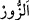
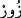

Bazıları: “Oyun, eğlence, yalan, ağıt ve bâtıl teğannîler, şarkılar ve türküler de yalan
konuşulan meclislere dâhildir.” demiştir.
Rivâyet edildiğine göre Muhammed b. Münkedir şöyle demiştir: “Bana ulaşan bir
habere göre Allah kıyâmet gününde şöyle nidâ eder: “Nefislerini ve kulaklarını eğlence
ve şeytanın çalgılarından uzaklaştıranlar nerede? Onları misk bahçelerine koyun. Sonra
da meleklerine der ki: “Kullarıma hamdimi, senâmı ve yüceliğimi duyurun. Onlara
haber verin ki, kendileri için bir korku yoktur ve onlar mahzun da olmayacaklardır.”
Keşfü’l-esrâr’da böyle geçmektedir.
Orucun sünnetlerinden biri de oruçlunun dilini yalandan, gıybetten, boş sözlerden,
sövüp saymaktan, laf taşımaktan, şakalaşmaktan, övgü, teğannî ve şiir söylemekten
korumaktır. Burada teğannî ile kasdedilen şeytanın istediği şehvet ve mahlûkata
muhabbet gibi kalbi harekete geçiren bâtıl teğannîdir. Allah’a şevki tahrik eden teğannî
ise hak olan teğannîdir. Nitekim el-İhyâ’da böyle geçmektedir.
Lahn/makam ile Kur’an okumak konusunda ihtilâf edilmiştir. İmam Mâlik ve
fukahanın çoğu Kur’an’ın esas gelme amacı olan huşû ve tefekküre mâni olduğu için
bunu mekruh görmüşlerdir. Bunun için Kâdîhân’da der ki: “Terâvihte güzel sesle
okuyanı mihraba geçirmek uygun değildir. Bilakis düzgün okuyan öne geçirilmelidir.
Çünkü imam güzel sesli olursa huşû, tedebbür ve tefekkürden alıkoyar.”
Ebû Hanîfe ve seleften bir grup, bu konudaki hadisleri dikkate alarak makam ile
okumayı müstehab gördüler. Çünkü bu rikkate ve haşyeti harekete geçirmeye sebep olur.
Nitekim Fethu’l-karîb’de böyle geçmektedir.
Hadîs usûlünde der ki: “Hadis ehlinden olan şeyh (muhaddis), hadis rivâyet etmek
üzere oturunca, güzel sesli bir kârînin Kur’an okumasının ardından hadisleri rivâyet
etmeye başlamalıdır.”
Kıraatte sesi güzelleştirme ve süsleme, (gereksiz) uzatma sûretiyle kıraat sınırını
aşmadıkça müstahab sayılmıştır. Şâyet ifrata kaçar, bir harf ziyâde eder veya gizlerse bu
haramdır. Nitekim Ebkâru’l-efkâr’da böyle geçmektedir.
Şeyh Sa‘dî der ki:
Güzel ses, güzel yüzden daha iyidir
Çünkü biri nefse haz verir, diğeri ruha güç ve kuvvet verir
“Rasûlullah (s.a.) mi‘rac gecesinde daha önce bir benzerini görmediği bir melek
gördü. Tesbih ettiği zaman sesinin güzelliğinden arş sallanırdı. Önünde nurdan iki büyük
sandık vardı. İçinde oruç tutanların cehennem azâbından beraatları bulunuyordu.” Bu
rivâyetin tafsîlâtı Hz. Hüdâyî (k.s.)’un Mecâlisü’n-nefâis’indedir.
Sehl (k.s) der ki: “ ile bid‘at ehlinin meclisleri kasdedilmiştir. Ebû Osman (k.s.)
da der ki: “Boş iddiâ ehlinin meclisleri, kezâ dîninde sana bir ziyâdelik kazandırmayan,
bilâkis düşüşe ve fesada sebep olan her meclis “dur.
Onlar tesadüfen “boş sözlerle” hayrı olmayan bilakis terki gereken boş ve lüzumsuz